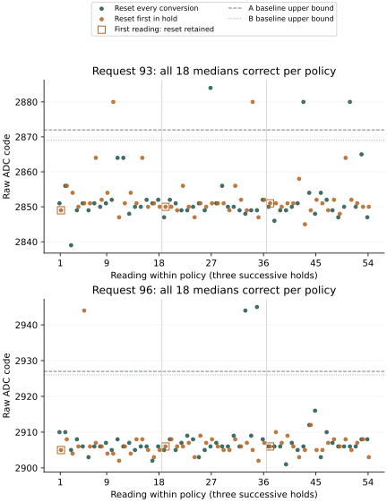

Return: median recognition passes; raw excursions persist
Return 20261001-163953 recovered all 432 acquisitions and 10,116 native journal records, with successful control restoration, pin release and a complete terminal report. All four frozen calibrations correctly recognized 72 of 72 reference medians and 72 of 72 held-out medians. Recording, reference transfer, median recognition and reset-slot timing meet their declared criteria.
Individual observations retain eight held-out exceptions under both reset policies. Each containing three-reading median remains correct. These are 72 held-out medians assessed four ways, not four independent sets of measurements.
| Request | Reset policy | Raw readings / outside expected interval | Correct medians |
|---|---|---|---|
| 93 | Every conversion | 54 / 3 | 18 / 18 |
| 93 | First in hold | 54 / 2 | 18 / 18 |
| 96 | Every conversion | 54 / 2 | 18 / 18 |
| 96 | First in hold | 54 / 1 | 18 / 18 |
Every calibration identifies the same eight raw readings as outside the expected state's interval. A baseline assigns three to the wrong state and rejects five; B baseline assigns one to the wrong state and rejects seven. Each candidate rejects all eight. The smallest correct held-out median margins are 8, 4, 5 and 1 ADC codes under A baseline, A candidate, B baseline and B candidate respectively.
The exceptional held-out values are 2880 and 2884 at request 93, and 2944 and 2945 at request 96. In the first-in-hold policy, the three exceptions occur at readings 5 and 10 of the corresponding holds in visit 1, and reading 16 of the request-93 hold in visit 2. Each has an explicit omitted-reset event. All six first readings that retain a reset under this policy are correctly recognized as raw readings. Thus a reset immediately before that conversion is not necessary for these excursions.

Five exceptions in 108 every-conversion readings versus three in 108 first-in-hold readings do not establish a reliable reduction. These observations come from three holds per condition in one boot. The reset policy did not eliminate the excursions, and there is no median-recognition difference between policies in this return.
What the added diagnostics observed
The native quiet observer retained 100,539 pin-observation iterations across 432 intervals. Both sampled lines remained high and released, and both selectors remained GPIO. There were no sampled line transitions, direction contradictions or selector changes. Each interval lasted 1.000–1.004463 milliseconds; the largest recorded gap between observations was 8.019 microseconds.
These are bounded, sequential observations of the selected PMIC interface. Activity between observations, activity during transfers and activity elsewhere in the cluster are not excluded. The result supplies no positive indication of competing control in the sampled quiet intervals; it does not establish exclusive ownership of the cluster.
All four added pre/post-quiet register values were zero in every acquisition. The complete trace contains 7,776 events: 7,674 ADC-related register transfers and 102 explicit reset omissions. No transport error or trace overflow was reported. Post-trigger status was 1 and cleanup status was 0 throughout. These values remain observations under the inferred register semantics, not independent evidence of fresh analog conversion.
The 330 reset-write events lasted 1.749463–1.843222 milliseconds. The 102 omitted events lasted 1.537–1.963 microseconds. Both policies' padded reset slots lasted 4.000000–4.001444 milliseconds, inside the declared four-millisecond minimum and fifty-microsecond overshoot limit. Reset timing therefore passes separately from recognition.
All request readbacks match, and both result-octet pairs agree in every acquisition, including exceptions. The new transaction values also agree with the original sample trace. The diagnostics locate no reported transport, idle-route or timing failure associated with the exceptional readings. Analog accuracy and conversion freshness remain unresolved.
Reference observations and retained limits
The current reference readings do not change any bound. Although all 72 reference medians are correct under all four previous calibrations, seven raw reference readings fail at least one calibration. Two request-90 readings of 2816 are accepted only by A baseline, at its endpoint. Request 93 produces 2880; request 96 produces two readings of 2944.
At request 99, a reading of 3008 is assigned to state 4 by every calibration, although the expected state is 3. At request 102, a reading of 3007 is accepted by three calibrations and falls one code below B candidate's lower bound. These outcomes must remain distinct: wrong-state assignment, rejection and a correct median describe different properties of the same recording.
The reference raw counts, out of 216, are 212 correct / 3 wrong-state / 1 unresolved for A baseline; 210 / 1 / 5 for A candidate and B baseline; and 209 / 1 / 6 for B candidate. No reference raw decision is unavailable. Median transfer therefore succeeds without establishing single-reading reliability or confining excursions to requests 93 and 96.
Recording and provenance
Two read-only captures of the 96 MiB experiment region matched. All frozen preparation artifacts and 268 source snapshots verify, and the reader frozen before execution reproduces the complete analysis. Seven return checks independently reconstruct the raw and median decisions, trace words, omitted-reset cases, exposure groups and timing; removal of the terminal or final hold footer prevents qualification.
Acquisition occupied 20.446 seconds. The terminal counter corresponds to 418.966 seconds, approximately 6 minutes 59 seconds, at the configured 54 MHz frequency. Its timestamp follows all four auxiliary journal readbacks and precedes its own write/readback. It does not measure total powered duration. The prescribed allowance was ten minutes; no workflow deviation was reported.
The observed CPU-frequency range was 1,499,971,227–1,500,025,443 Hz and the raw thermal range was 67319–67329. Boot files and the retained preceding journal are unchanged. Partition geometry and the MBR are unchanged, and the FAT copies agree. Seven boot-volume metadata sectors changed; their writer and time remain unestablished.
Capture SHA-256: 63d5d89223076f7f72fc20cd3ab6c1dcf22a9ca3d28fe81945880fc6d0d985c0.
Decoded journals · Policy comparisons and observations · Provenance · Evidence index · Boot-volume comparison
Question and rationale
Does resetting the ADC before every acquisition contribute to the recurring excursions at requests 93 and 96? Do observations immediately before the ADC sequence reveal unexpected pin routing, line activity or conversion state? These are distinct questions. This run compares reset frequency and adds native diagnostics; it cannot identify another controller solely from an unexpected observation.
The preceding return recovered all 1,296 acquisitions. Its two reference sets recognized one another completely, yet all four calibrations rejected the held-out request-93 triple 2857, 2880, 2880. Five isolated request-96 readings of 2944 received wrong-state assignments under A baseline; their triple medians remained correct. A separate reference doublet at request 99 widened the fitted interval. These observations motivate testing conversion sequencing while freezing the four actual recognition intervals from that return.
Other components may remain active after CPU entry. The current PMIC path reassigns two pins from BSC_M2 to GPIO and performs its own I2C transfers. The route checks are not a hardware ownership lock. This investigation observes that particular interface; it does not disable or establish the inactivity of every controller, processor, DMA engine or power-management function.
Schedule
Counts, requests and ADC values below use decimal notation; register addresses use hexadecimal notation. First acquire 36 readings at each nominal request 90, 93, 96, 99, 102 and 105. These 216 observations assess whether the previous bounds transfer to the new run. They never fit or replace those bounds.
The remaining 216 readings form three visits. Each visit contains four 18-reading holds, covering each combination of request 93 or 96 and reset policy exactly once. Policy E resets before every conversion. Policy H resets before the first conversion of each hold and omits the next seventeen resets.
| Visit | Ordered holds: request / policy |
|---|---|
| 1 | 93 / E, 96 / H, 96 / E, 93 / H |
| 2 | 93 / H, 96 / E, 96 / H, 93 / E |
| 3 | 96 / E, 93 / H, 93 / E, 96 / H |
Each condition receives 54 raw readings and eighteen disjoint triple medians. Three holds in one boot provide a bounded comparison, not independent apparatus replications or complete counterbalancing. All 432 acquisitions precede SD persistence. The electrical controls, one-millisecond settling, guard checks, result-octet ordering and restoration remain unchanged.
Native observations and reset control
Both policies use identical instrumentation. Before each ADC sequence, SEIGRASM reads conversion control 0x8018 and status 0x801b, observes the released GPIO pins for at least one millisecond without issuing bus writes, then reads the same two registers again. The observer records line levels, line transitions, direction, selector nibbles, sample count, largest gap between observations and the first and last unexpected-state counters. The pin reads are sequential, not simultaneous. Pulses between observations remain unobserved.
A sampled line low, a driven direction or a non-GPIO route stops acquisition before reset or trigger. A failed added read, a set busy bit after the quiet interval, or a set error bit also stops the sequence. Original register values, transport status and the stopping reason remain recorded. No unexplained state is cleared merely to continue the experiment.
The added reads use addresses already exercised by the acquisition path. Their status semantics remain inferred rather than established by a complete component register specification. Observation may affect the apparatus; the comparison includes that instrumentation in both policies.
Each attempted ADC read or write is retained in a bounded trace of twenty events. Every event records its kind, register address, value, transport status and ordered start/end counters. An omitted reset has a distinct event kind and issues no bus transfer. Trace exhaustion returns a failure before an additional access. A failed read's retained data is not treated as available merely because a value is present.
The reset event occupies a common minimum four-millisecond slot, measured from the start of its attempted or omitted transfer. The original twenty-microsecond reset delay follows in both policies. Reset transport end and padded slot end are recorded separately. A failed transfer returns immediately without padding. Both policies retain enable, selector, status cleanup, trigger, busy polling, repeated result reads and final cleanup in their original order.
Operation profile 0 retains zero added operation wait. The diagnostic quiet interval, extra register reads and common reset slot nevertheless change acquisition cadence relative to previous experiments. This is an instrumented comparison of two reset policies; it is not an unchanged repeat of the preceding run.
SEIGRASM interfaces
| Operation | Interface and retained evidence |
|---|---|
control | Sample and ADC entries bind each row to its reset policy and 152-word diagnostic record. The original sample, guard and ADC operations remain delegated. Status 240 retains an added-read or quiet-pin failure; 242 indicates busy after quiet; 243 indicates the sampled error bit. |
quiet | Accepts the existing pin context, diagnostic row and bounded counter interval. Reads DATA, IODIR and the two selector words. It issues no GPIO writes and returns a contradiction status if an unexpected sample occurs. |
transact | Read/write entries retain the original PMIC transport results. They trace at most twenty events and conditionally omit only 0x8019=1. Overflow status 225 is retained through the delegated ADC's transport-error convention. |
Diagnostic words 0–5 hold identity, policy, requested reset, completion and wrapper counters; 6–17 hold quiet observations; 18–22 hold reset timing and status; 23–31 hold stopping reason, trace count/overflow, control-read count, counter budgets/frequency and initial selector nibbles. Words 32–151 contain twenty six-word events. The existing 72-word sample and nine-word operation record remain alongside each diagnostic record.
The three operations consist of literal AArch64 opcode words and preserve the established callee register/stack contract. Counter observations use instruction synchronization; the quiet observer completes preceding MMIO reads before its observation timestamp. Contexts are bounded, disjoint and prepared for a single caller. PC tools copy instructions and data and independently decode returned journals; they do not compile a foreign target language.
Declared assessment
The four calibrations are frozen from return 20261001-142524, preparation 52A2D68F1212. Their exact endpoints are preserved in the manifest and in the preceding comparison. Every reference and held-out reading is assessed against each calibration separately. No run-dependent refitting, widening, clipping, removal or replacement is permitted.
| Question | Requirement or reported observation |
|---|---|
| Complete recording | 432 successful samples, operation records and control traces; successful restoration and pin release; four complete auxiliary journals and the primary terminal report. Complete persistence contains 10,116 native records. |
| Reference transfer | For each frozen calibration separately, all 72 current reference medians must be correct. Failure remains explicit and does not prevent reporting later observations against the same fixed bounds. |
| Held-out recognition | For each calibration separately, all 72 held-out medians must be correct. Report correct, wrong-state, unresolved and unavailable counts by request, policy, visit and raw versus median observations. |
| Reset timing | Successful reset transport must finish within four milliseconds; each padded slot must end between four milliseconds and four milliseconds plus fifty microseconds. A longer slot remains in the result and fails matching; it is not excluded. |
| Unexpected activity | Report every sampled pin contradiction and every added status read, including values before and after quiet. Relate them to the preceding request, ADC trace, control readbacks and ordered counters. Absence of sampled activity does not establish exclusivity. |
| Policy comparison | Compare all four conditions under each unchanged calibration. Retain first-in-hold reset observations separately from the seventeen omitted-reset observations. Report whether excursions persist, disappear or change without treating a small zero count as demonstrated reliability. |
Counter intervals use the reported architectural frequency. They do not establish an independently calibrated timebase. Matching refers to the declared reset slot; total conversion duration and bus traffic may still differ between policies. Trace agreement establishes the recorded digital sequence, not calibrated absolute voltage or independent conversion freshness.
Interpretation and next comparison
The declared median criteria pass, while raw excursions recur under both reset policies. Recorded omissions show that the explicit per-conversion reset write is not necessary for the effect. This does not rule out consequences of an earlier reset or other operations that still recur before every conversion.
In particular, both policies retain the enable write 0x801a=1 and selector write 0x8010=15, as well as trigger and cleanup. A useful next comparison would keep reset at the first conversion of each hold and vary enable and selector reissue independently. A common timed slot for each present or omitted write would separate command choice from its elapsed allowance. This is a proposed experiment; whether either operation contributes remains unresolved.
The earlier result-consistency comparison already retained exceptional values through reversed byte order and additional snapshots. The present trace agrees at both result pairs as well. Another identical result-read repeat would therefore add less discrimination than separating the still-common configuration operations.
No sampled pin or status contradiction links the excursions to another component's activity. Such activity remains possible outside the observation windows or selected interface, but is not established by this return. The observed cases do not justify changing recognition bounds or attributing the effect to firmware, analog noise or a particular silicon component.
The instrumentation and reset-slot padding differ from the preceding experiment, and only two requests receive held-out exposure here. The change from its rejected median to complete median recognition cannot be attributed to either reset policy. This work qualifies the native diagnostic path and the stated median outcomes on this apparatus; it does not establish independent conversion freshness, automatic silicon discovery, firmware exclusion or a new Hyphos/Seigsit creation result.
Preparation and run interval
The powered allowance is 10 minutes. The preceding 10,549-record return reached its terminal counter at 461.108 seconds. This run records 10,116 records and acquires fewer samples, with added instrumentation. That comparison supports the allowance; only a returned terminal record establishes completion.
Preparation B454C983EC04 passed all 21 supplied-device and physical-return reconstruction checks. Installation completed with 6,144 verified transfers and two matching full readbacks while the volume remained locked, followed by successful ejection. The pre-write backup matches the preserved preceding return. Its complete physical return is recorded above. The configuration-retention successor is prepared separately; this return remains preserved.
Image SHA-256: 81fefb5138c2c7ae5d6a3c6a72681ec257a7a0517aeecdc5ac6a52b6cee86125.
Frozen protocol · Manifest · Validation · SD verification · Evidence index